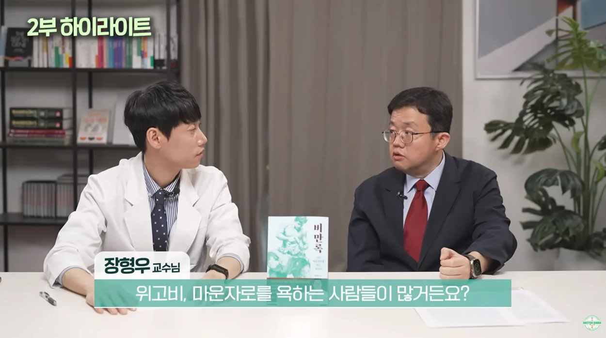
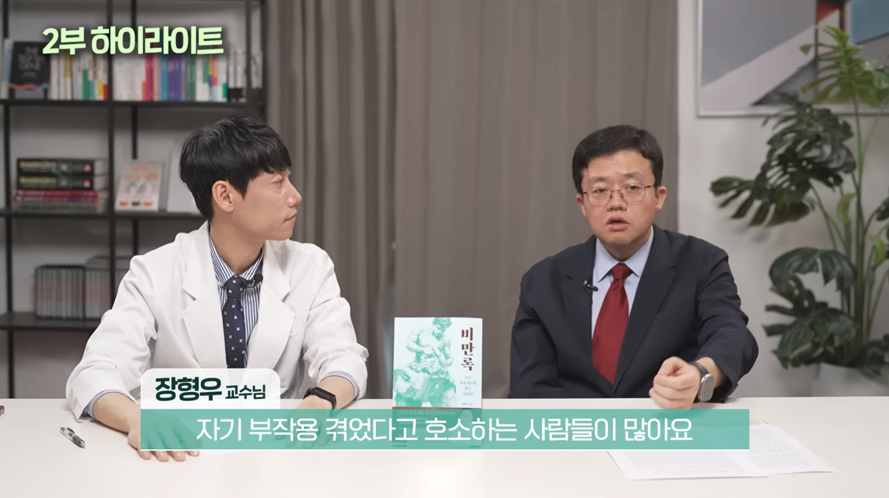
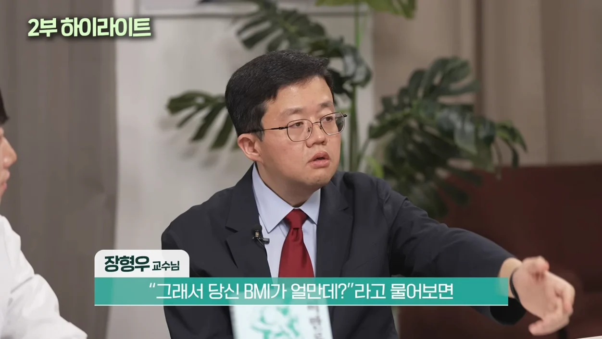
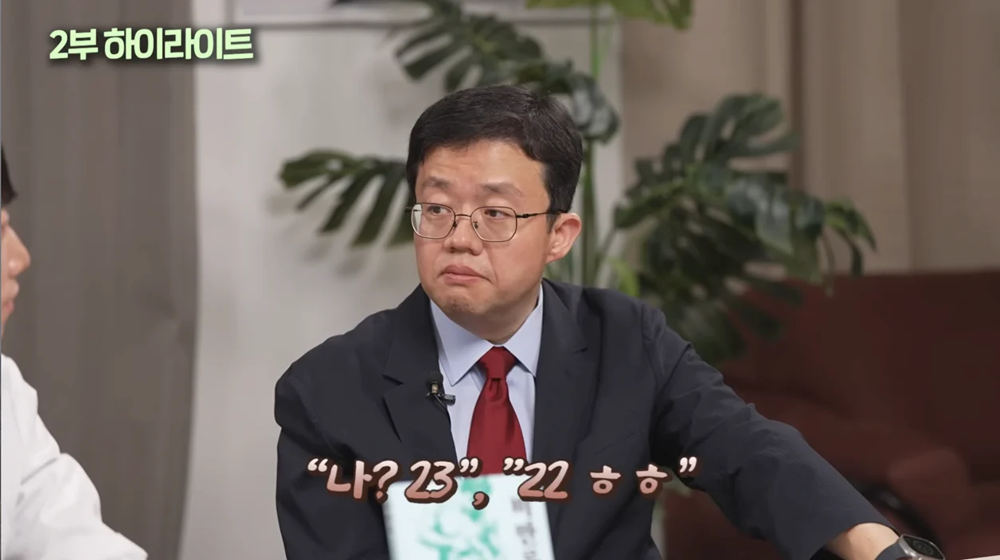
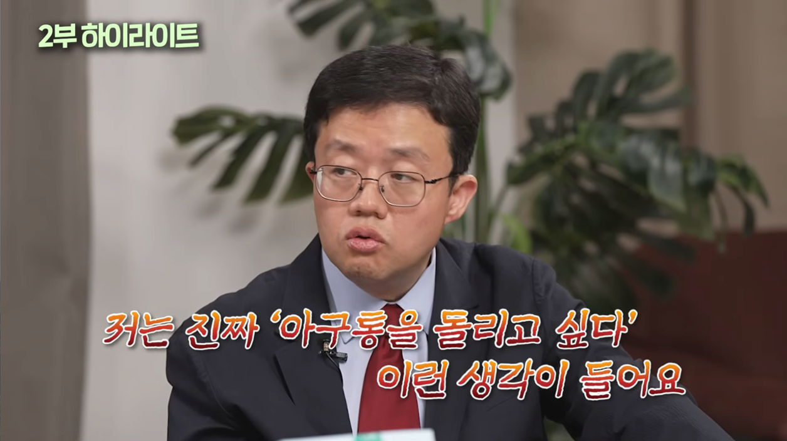

걍 대놓고 160에 40kg같은 뼈말라가 진단서 대충 떼주는 병원 가서 마운자로 사오고, 이런 걸 막아야 하는데 이상한 곳을 잡고 있음 ㅋㅋ





걍 대놓고 160에 40kg같은 뼈말라가 진단서 대충 떼주는 병원 가서 마운자로 사오고, 이런 걸 막아야 하는데 이상한 곳을 잡고 있음 ㅋㅋ
bmi23 마운자로 반년차
장점 간식, 술 생각 안남
단점 일본 라멘 한그릇 먹어도 물려서 버거움
일주일이면 약빨떨어지는거 느껴지는데 그때 맛난거 먹음
평소에는 부작용 있을까봐 끼니 일부러라도 챙겨먹움
(딱히 먹고싶은게 사라져서 일주일내내 점심 햄부기먹음)
약빨떨어질때 먹는 이유가 뭐임? 어짜피 약빨있을때 살은 빠졌겠다 치팅데이같은 느낌인가?
그때아니면 물려서 못먹기도하고 그때 딱 식욕 올라옴 ㅋㅋㅋ 난 안돼지상태에서 유지겸부가효과 목적임
근데 bmi가 23인데 왜 마운자로를 시작한거야? (아구통돌리려는거아님 진짜궁금해서물어봄)
1. 체중유지(잘찌고 잘빠지는 체질)/음주 감소
2. 심혈관질환예방 등 기타기대되는부가효과(but 불확실성)
3. 부작용은 안먹어서 생기는거니 예방가능하다고 생각했음, 물도 원체 많이먹어서 ㄱㅊ
4. 코스트가 돈뿐인데 일본살아서 싸기도하고 여유있는편이라 1,2 효과를 누리면서 안할이유가 없다고 생각함
아 이거 난줄 ㅋㅋㅋ 나도 그랬었음 지금은 끊은지 한달쯤 됐지만
왜 끊게 됐어?
돈 문제 때문에 ㅋㅋ
난 베트남 사는데 베트남은 한국이나 일본처럼 정식 라이센스 수입이 안되고 있음. 소비층도 너무 얕고 하다보니 일부 병원들이 한국꺼나 일본꺼를 수입해서 팔긴 하는데 한국보다도 더 비싸게 팜.
예를들어 1단계가 한국에서 30만원이면 여기선 35~40에 파는 식임. 난 3단계까지 올라갔는데 월 55~60정도씩 받더라. 매달 자금부담이 심해서 목표체중 찍자마자 바로 관둠
헉 더비싸누
BMI 39에서 시작. 현재 32. 삭센다 위고비 마운자로 7.5 수면부족이 사라지고 코골이가 적어짐. 진짜 의사가 자다가 죽을수 있다고 해서 시작한게 1년 8개월째임. 1월에 너무 정체기라 잠깐 안했더니 바로 34로 복귀해서 마운자로 한지 5개월째임
bmi그렇게 낮은데 처방해줘? 어떻게 받은거야 나도 받고싶어서 질문해
정확한수치는 몰겟는데 20이하아니면 됐던가 그랬음 처방도 대면아니고 전화로 주의사항 같은거 전달받고 끝이었음
아구통 ㅋㅋㅋㅋㅋㅋㅋㅋㅋ
비만 해결이 최고의 건강예방 같은데 이 악물고 가격 안내림
Bmi27 28 왔다갔다하는데 힘들다 운동하기가 싫다 허리가 너무아프다
나도 27인데 지방간때매 마운자로 시작함..
ㅋㅋㅋㅋㅋㅋㅋ
쓰레드에 저 마운자로때문에 체질 변했어요 절대 하지마세요 글보니 몸무게46kg 여자더라 그냥 레전드임
이분 먹을거 이야기할때 절로 고개를 끄덕 거리게됨.